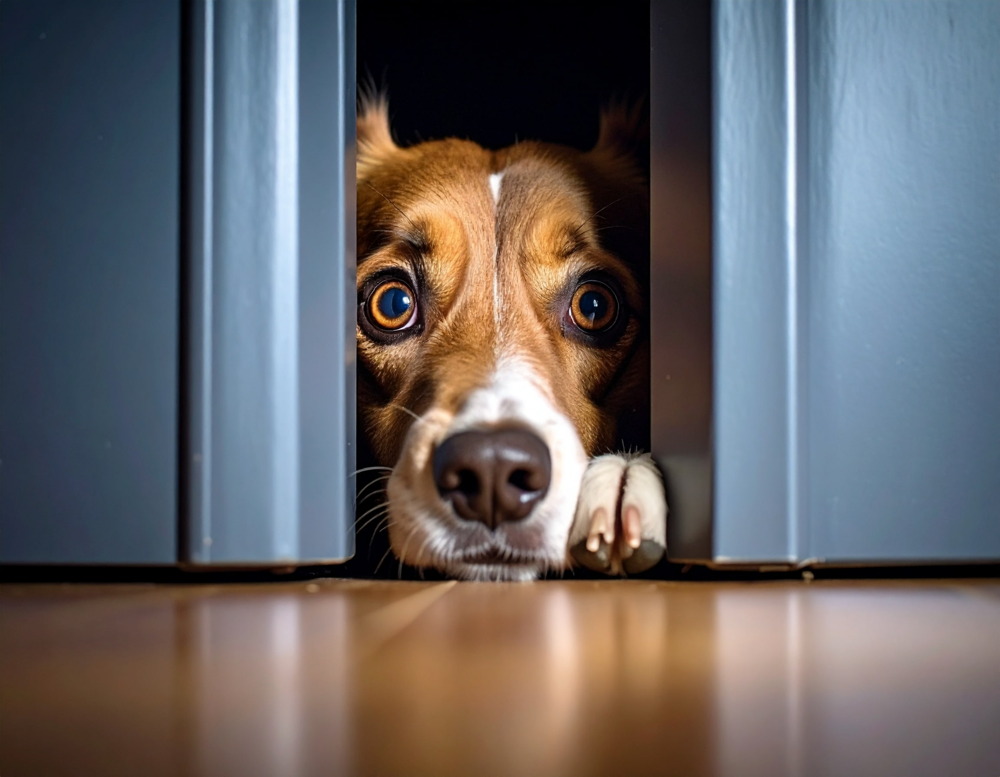

Cómo ayudar a tu perro a superar sus miedos
Los miedos en los perros pueden originarse por malas experiencias, falta de socialización o simplemente por predisposición genética. Algunos temen a los ruidos fuertes como fuegos artificiales o tormentas, otros a personas, objetos o situaciones específicas.
Como adiestrador canino, trabajo con muchas familias cuyos perros presentan comportamientos de evitación, temblores, ladridos excesivos o incluso bloqueos por miedo. Lo primero es no castigar al perro por tener miedo: eso solo empeora la asociación.
Las herramientas que uso incluyen la desensibilización progresiva y el contracondicionamiento, siempre de forma positiva. El objetivo es que el perro aprenda que esa situación que antes le generaba miedo ahora predice cosas buenas: comida, juegos o caricias.
Si tu perro tiene miedo, consultá con un profesional. No es un problema menor: los miedos pueden escalar a fobias o agresiones defensivas si no se abordan a tiempo.